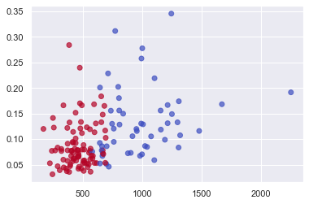

Unsupervised Machine Learning: KNN
By Alberto García Hernández
1 January 2021
Download Notebook
K-Nearest Neighbour algorithm is the simpliest ML algorithm. Also known as lazy learning (why? Because it does not create a generalized model during the time of training, so the testing phase is very important where it does the actual job.
- KNN classification: the output is a class membership. An object is classified by a plurality vote of its neighbors, with the object being assigned to the class most common among its k nearest neighbors.
- KNN regression: the output is the property value for the object. This value is the average of the values of k nearest neighbors.
The distance measures for continious variables are:

In the instance of categorical variables, the Hamming distance must be used.

How to choose the value of K K value is a hyperparameter which needs to choose during the time of model building.
- Low K: low bias, high variance.
- High K: smoother decision boundary –> low variance, high bias.
We should choose an odd number if the number of classes is even. The most common values are to be 3 & 5.
import numpy as np
import pandas as pd
from matplotlib import pyplot as plt
from sklearn.datasets import load_breast_cancer
from sklearn.metrics import confusion_matrix
from sklearn.neighbors import KNeighborsClassifier
from sklearn.model_selection import train_test_split
import seaborn as sns
sns.set()
1. KNN Classifier
Tutorial: https://towardsdatascience.com/k-nearest-neighbor-python-2fccc47d2a55
breast_cancer = load_breast_cancer()
X = pd.DataFrame(breast_cancer.data, columns=breast_cancer.feature_names)
X = X[['mean area', 'mean compactness']]
y = pd.Categorical.from_codes(breast_cancer.target, breast_cancer.target_names)
y = pd.get_dummies(y, drop_first=True)
X.head()
| mean area | mean compactness | |
|---|---|---|
| 0 | 1001.0 | 0.27760 |
| 1 | 1326.0 | 0.07864 |
| 2 | 1203.0 | 0.15990 |
| 3 | 386.1 | 0.28390 |
| 4 | 1297.0 | 0.13280 |
y.head()
| benign | |
|---|---|
| 0 | 0 |
| 1 | 0 |
| 2 | 0 |
| 3 | 0 |
| 4 | 0 |
X_train, X_test, y_train, y_test = train_test_split(X, y.values.ravel(), random_state=1)
knn = KNeighborsClassifier(n_neighbors=5, metric='euclidean')
knn.fit(X_train, y_train)
KNeighborsClassifier(metric='euclidean')
y_pred = knn.predict(X_test)
plt.scatter(
X_test['mean area'],
X_test['mean compactness'],
c=y_pred,
cmap='coolwarm',
alpha=0.7
)
<matplotlib.collections.PathCollection at 0x7fd4619beb80>

confusion_matrix(y_test, y_pred)
array([[42, 13],
[ 9, 79]])
2. KNN Regression
Tutorial: https://medium.com/analytics-vidhya/k-neighbors-regression-analysis-in-python-61532d56d8e4
import mglearn
from sklearn.neighbors import KNeighborsRegressor
X, y = mglearn.datasets.make_wave(n_samples=40)
X_train, X_test, y_train, y_test = train_test_split(X, y, random_state=0)
reg = KNeighborsRegressor(n_neighbors=3, metric='minkowski')
reg.fit(X_train, y_train)
KNeighborsRegressor(n_neighbors=3)
print(reg.score(X_test, y_test))
0.8344172446249605